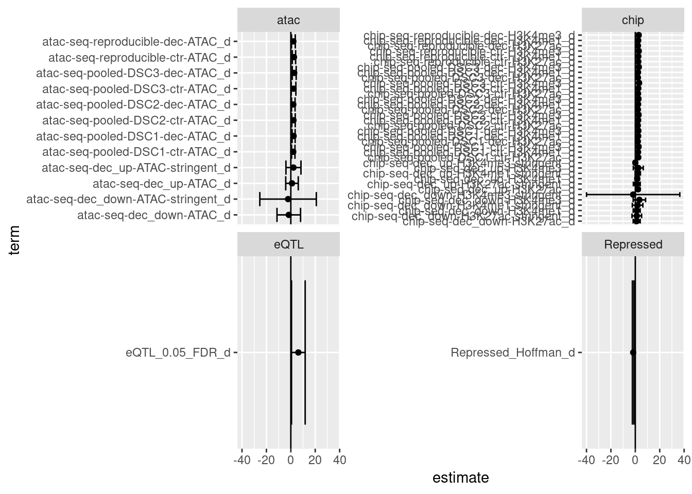

Last updated: 2019-06-12
workflowr checks: (Click a bullet for more information) ✔ R Markdown file: up-to-date
Great! Since the R Markdown file has been committed to the Git repository, you know the exact version of the code that produced these results.
✔ Environment: empty
Great job! The global environment was empty. Objects defined in the global environment can affect the analysis in your R Markdown file in unknown ways. For reproduciblity it’s best to always run the code in an empty environment.
✔ Seed:
set.seed(20190313)
The command set.seed(20190313) was run prior to running the code in the R Markdown file. Setting a seed ensures that any results that rely on randomness, e.g. subsampling or permutations, are reproducible.
✔ Session information: recorded
Great job! Recording the operating system, R version, and package versions is critical for reproducibility.
✔ Repository version: 74a18fb
wflow_publish or wflow_git_commit). workflowr only checks the R Markdown file, but you know if there are other scripts or data files that it depends on. Below is the status of the Git repository when the results were generated:
Ignored files:
Ignored: .Rhistory
Ignored: .Rproj.user/
Ignored: .drake/
Untracked files:
Untracked: (dellxps's conflicted copy 2019-06-05).Rhistory
Untracked: HDF5.ttl
Untracked: analysis/23_and_me.Rmd
Untracked: analysis/awd.RData
Untracked: analysis/dataset_SNPs_mismatches-reference.txt
Untracked: analysis/enrichment_analysis.Rmd
Untracked: analysis/ldshrink_drake.Rmd
Untracked: analysis/mws.RData
Untracked: big_hic_t.tsv.gz
Untracked: eqtl_gwas_file.tsv.gz
Untracked: fat_eqtl.tsv.gz
Untracked: gwas_file.tsv.gz
Untracked: gwas_ptb_file.tsv.gz
Untracked: gwas_ptb_file_i.tsv.zstd
Untracked: gwas_scz_file.tsv.gz
Untracked: hic_t.tsv.gz
Untracked: little_gwas_i.tsv.zstd
Untracked: pr/
Untracked: shuffeqtl_gwas_file.tsv.gz
Untracked: sub_gwas_ptb.tsv.gz
Untracked: ut_eqtl.tsv.gz
Untracked: workflow_params.json~
Unstaged changes:
Modified: _drake.R
Modified: analysis/multifeature.Rmd
Deleted: code/README.md
| File | Version | Author | Date | Message |
|---|---|---|---|---|
| Rmd | 74a18fb | CreRecombinase | 2019-06-12 | wflow_publish(“analysis/PTB_features.Rmd”) |
Below is a summary of the single-feature analysis. The intercept term has been removed.

sessionInfo()R version 3.5.3 (2019-03-11)
Platform: x86_64-pc-linux-gnu (64-bit)
Running under: Manjaro Linux
Matrix products: default
BLAS/LAPACK: /opt/intel/compilers_and_libraries_2019.3.199/linux/mkl/lib/intel64_lin/libmkl_gf_lp64.so
locale:
[1] LC_CTYPE=en_US.UTF-8 LC_NUMERIC=C
[3] LC_TIME=en_US.UTF-8 LC_COLLATE=en_US.UTF-8
[5] LC_MONETARY=en_US.UTF-8 LC_MESSAGES=en_US.UTF-8
[7] LC_PAPER=en_US.UTF-8 LC_NAME=C
[9] LC_ADDRESS=C LC_TELEPHONE=C
[11] LC_MEASUREMENT=en_US.UTF-8 LC_IDENTIFICATION=C
attached base packages:
[1] stats graphics grDevices utils datasets methods base
other attached packages:
[1] DT_0.4 forcats_0.3.0 stringr_1.4.0
[4] dplyr_0.8.1.9000 purrr_0.3.2.9000 readr_1.3.1
[7] tidyr_0.8.3.9000 tibble_2.1.2.9000 ggplot2_3.1.0
[10] tidyverse_1.2.1 drake_7.2.0.9000
loaded via a namespace (and not attached):
[1] Rcpp_1.0.1.3 lubridate_1.7.4 lattice_0.20-38
[4] assertthat_0.2.1 zeallot_0.1.0 rprojroot_1.3-2
[7] digest_0.6.19 mime_0.7 R6_2.4.0
[10] cellranger_1.1.0 plyr_1.8.4 backports_1.1.4
[13] evaluate_0.14 httr_1.4.0 pillar_1.4.1
[16] rlang_0.3.4.9003 lazyeval_0.2.2 readxl_1.1.0
[19] rstudioapi_0.10 whisker_0.3-2 R.utils_2.7.0
[22] R.oo_1.22.0 rmarkdown_1.13 labeling_0.3
[25] htmlwidgets_1.3 igraph_1.2.4.1 munsell_0.5.0
[28] shiny_1.2.0 broom_0.5.0 compiler_3.5.3
[31] httpuv_1.4.5 modelr_0.1.2 xfun_0.7
[34] pkgconfig_2.0.2 htmltools_0.3.6 tidyselect_0.2.5
[37] workflowr_1.1.1 crayon_1.3.4 withr_2.1.2
[40] later_0.7.5 R.methodsS3_1.7.1 grid_3.5.3
[43] nlme_3.1-137 jsonlite_1.6 xtable_1.8-4
[46] gtable_0.2.0 git2r_0.23.0 magrittr_1.5
[49] storr_1.2.1 scales_1.0.0 cli_1.1.0
[52] stringi_1.4.3 promises_1.0.1 xml2_1.2.0
[55] vctrs_0.1.0.9003 tools_3.5.3 glue_1.3.1
[58] hms_0.4.2 crosstalk_1.0.0 yaml_2.2.0
[61] colorspace_1.3-2 base64url_1.4 rvest_0.3.4
[64] knitr_1.23 haven_1.1.2 This reproducible R Markdown analysis was created with workflowr 1.1.1